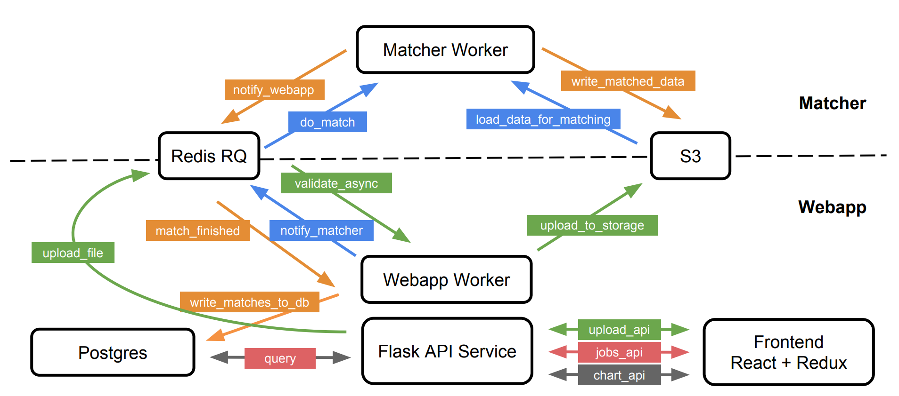

Modifying the Webapp
Modifying the Webapp¶
The webapp can be modified for adding new APIs, plots or functionalities that will improve the usability as well as the analysis. This document introduce the tech stacks and design patterns in the matching tool. The web application of this matching tool follows one of the popular and productive tech stacks today, a combination of React/Redux for creating UI and consuming APIs as the frontend, Python/Flask for providing APIs as the backend, and SQLAlchemy as the Python Object Relation Map (ORM) to communicate with the PostgreSQL database. The architecture is shown in the diagram.

Database¶
- PostgreSQL: An open source object-relational database.
- alembic: A database migrations tool written by the author of SQLAlchemy.
Backend¶
The backend of the matching tool follows the general modern Flask patterns with some variations, and uses the Flask Blueprints for better modularization of APIs. A blueprint can be seen as a collection of APIs and can be registered to the application. The template html files go to the /templates and all the static files go to the /static, including css files, icon, and the Javascript bundle.
backend
├── __init__.py
├── app.py
├── apis
├── __init__.py
├── chart.py
├── jobs.py
├── upload.py
└── query.py
├── templates
├── _base.html
└── index.html
├── static
├── output.js
├── main.css
⋮
└── favicon.ico
├── models.py
├── database.py
├── tasks.py
⋮
└── validations
└── __init__.py
-
Tech stacks
- Flask: A python microservice framework. Simple restish APIs that talk json with the client side app.
- goodtables: A framework to validate tabular data.
- RQ: A simple Python library for queueing jobs and processing them in the background with workers which uses Redis as a backend. RQ (or something similar) is necessarily because webapp-triggered processes (validation, matching) can take longer than is viable to do synchronously.
- SQLAlchemy: A SQL toolkit and Object Relational Mapper that gives application developers the full power and flexibility of SQL.
- Pandas: A Python data analysis library.
-
Details
-
APIs: One can modify APIs in
matching-tool/webapp/backend/apisCurrently, the backend factors the application into 3 sets of blueprint and aquery.pymodule: -query.py: A module provides python functions as interface for querying data from postgres, which use pandas intensely for data manipulation. -chart.py: Charts related APIs, which provide the information consumed by frontend dashboard. -jobs.py: Async-jobs related APIs, which use rq for getting information of jobs. -upload.py: Upload related APIs, which contains functionalities of async uploading and validation. -
Validation: If one wants to change the validation rules for the data schemas,
matching-tool/webapp/backend/validationis where to modify the codes. This module uses certain functionalities from goodtables, a python library that implements validation of tabular data according to a given schema and customizable list of checks. -
ORM: The backend uses SQLAlchemy as the Object Relational Mapper which presents a method of associating user-defined Python classes with database tables, and instances of those classes (objects) with rows in their corresponding tables. The database tables are defined in
database.py -
output.js: It's the Javascript bundle file generated by
Webpack.
-
Frontend¶
The frontend of the matching tool is basically implemented with React/Redux patterns and stuctured in a variation of Rails Style known as module index. We're organizing the sourcecode content by its type. actions, constants, reducers, and components all have dedicated files, but notice that actions, constants and reducers each also have a similarly-named index.js file. Noted that the details of React/Redux are not covered here, one should check out the official documentations.
frontend
├── actions
└── index.js
├── components
├── app.js
├── appbar.js
├── timeline.js
├── venn.js
⋮
└── upload.js
├── constants
└── index.js
├── index.js
├── reducers
└── index.js
⋮
├── store
└── configureStore.js
└── webpack.config.js
-
Tech stacks
- Webpack: A module bundler which takes all module dependencies and generates static assets that represent them.
- React: A Javascript library for building user interface.
- Redux: Redux is a predictable state container for JavaScript apps.
- Ramda: A Javascript library for functional programming.
- Material-UI: React components that implement Google's Material Design.
- react-vis: A collection of react components to render common data visualization charts.
- venn.js: A javascript library for laying out area proportional venn and euler diagrams.
-
Details
- React components: One can modify frontend React components in
matching-tool/webapp/frontend/components. React lets you define components as classes or functions which split the UI into independent, reusable pieces, and think about each piece in isolation. - Actions: In Redux, Actions are payloads of information that send data from your application to your store which can be found the codes in
matching-tool/webapp/frontend/actions - Reducers: In Redux, Reducers specify how the application's state changes in response to actions sent to the store which can be found in
matching-tool/webapp/frontend/reducers - webpack.config.js: The config tells webpack where to find the Javascript and React files, and where to put the generated Javascript bundle.
- React components: One can modify frontend React components in